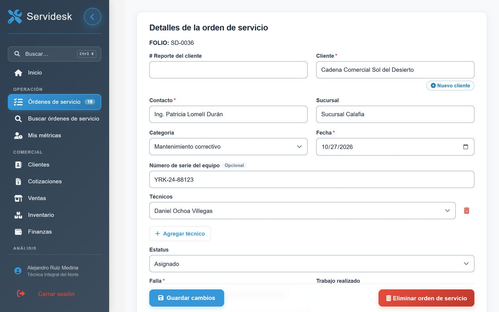

Responde a tus clientes industriales con orden y evidencia
Las plantas piden folio, tiempos de respuesta y evidencia de cada servicio. Servidesk te da todo eso sin hojas de Excel ni carpetas compartidas.
Sin tarjeta · Sin instalar nada · Con tus datos desde el primer día

Lo que vive todos los días una empresa como la tuya
Cada planta con su folio
El cliente te manda su número de reporte u orden de compra y hay que cruzarlo a mano con tu trabajo.
Tiempos que se miden
Te piden cerrar en cierto número de días y no tienes cómo demostrar que cumples.
Evidencia dispersa
Fotos en el celular de cada técnico y reportes en correos sueltos.
Pensado para mantenimiento industrial
Folio propio y folio del cliente
Cada orden guarda tu folio y el número de reporte de la planta, para buscarla por cualquiera de los dos.
Meta de cumplimiento
Defines en cuántos días debes cerrar y el sistema marca lo atrasado. Las estadísticas muestran tu cumplimiento.
Varios técnicos por orden
Asigna cuadrillas y lleva lo que hizo cada quien en el trabajo realizado.
Equipos por planta y sucursal
Compresores, bombas, subestaciones o líneas, cada uno con su serie e historial de servicio.
Cotización posterior al servicio
Cuando la urgencia obliga a reparar antes de autorizar, cotizas después lo que realmente se usó.
Historial de cambios
Quién cambió qué y cuándo, para responder cualquier aclaración.
También trabajamos con
Pruébalo con tus propios datos
Regístrate, sube tus clientes desde Excel y manda la primera orden de servicio hoy mismo. Sin tarjeta y sin instalar nada.